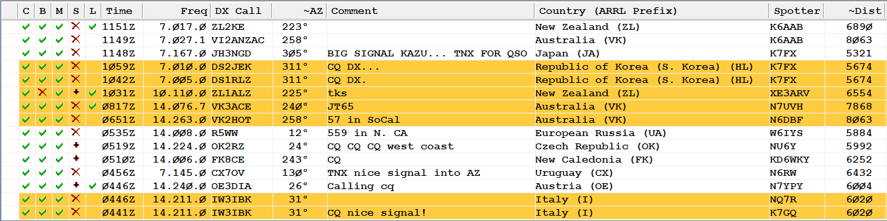
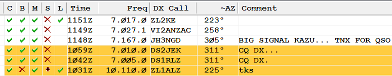
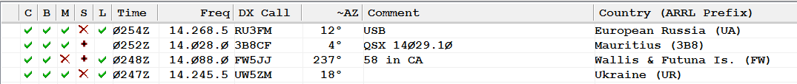

|
Mike,
I was looking for a Smartphone app for my Android based
Samsung. I assume HRD as demoed below is desktop?
I use DXLab Suite and another add on for telling me what is
spotted when I am home. It differentiates band/mode which is exactly what
I want. But, looking for something for my pocket when I am outside sawing
wood or other out of the house action.
Tnx,
Al From: Mike Flowers [mailto:mike.flowers@gmail.com] Sent: Thursday, May 14, 2015 9:40 AM To: 'Al N6TA' Subject: RE: [NCDXC Chat] Any recommended Android DX spotting apps? Hi
Al, I’m
using Ham Radio Deluxe (HRD) Logbook and in conjunction with the VE7CC cluster,
which I have configured for only West Coast spots, the WSI (Worked Station/Slot
Indicators) do the job for me.  Need
the band slot here with ZL1ALZ, worked the station before and he’s an LoTW user
…  Need
the band-mode slot here with FW5JJ:  I
am using this to work my way to the DXCC Challenge 1500
medallion. From: Chat
[mailto:chat-bounces@ncdxc.org] On Behalf Of Al N6TA via
Chat I would appreciate
knowing of your preferred application that can be configured to
heavily filter spots so that I can be notified of what I want and not anything
else. Anybody have a favorite? I have not tried any yet and want to
start with the clubs experience first! Tnx in
advance. 73
de-Al N6TA |